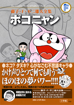

| |

定価1,575円（税込）
A5判／360ページ
好評発売中！
※収録内容は変更になる
場合があります。

|
＜ポコニャン（希望の友 掲載）＞
| 美人にとれる（1975年4月号） |
| シッチャカメッチャカ（1975年5月号） |
| 目がさめないよう（1975年6月号） |
| ねん土ざいく（1975年7月号） |
| 山でおよいだよ（1975年8月号） |
| ふくろづめ台風（1975年9月号） |
| 他人のゆめをみる（1975年10月号） |
| 落ち葉たき（1975年11月号） |
| 忘れられた贈り物（1975年12月号） |
| ししがおどった（1976年1月号） |
| ドカ雪（1976年2月号） |
| ひろーくします（1976年3月号） |
| かあさんっていいな（1976年4月号） |
| ここほれニャンニャン（1976年5月号） |
| 魔の手がせまる！（1976年6月号） |
| 黒べえをすくえ！（1976年7月号） |
| お空であそぼう（1976年8月号） |
| 庭で山のぼり（1976年9月号） |
| タイムマシンで早おき（1976年10月号） |
| ぼくたちだけの家（1976年11月号） |
| けっさく映画をつくる（1976年12月号） |
| お年玉作戦（1977年1月号） |
| 逆もどし（1977年2月号） |
| あとがこわい！（1977年3月号） |
| パニックがおきた！（1977年4月号） |
| 雲になって……？（1977年5月号） |
| ねがい星花火（1977年6月号） |
| やせがまん（1977年7月号） |
| ぼくだっておよげる！（1977年8月号） |
| 台風でこらしめろ!?（1977年9月号） |
| 受験生に協力！（1977年10月号） |
| きおくをたどれ！（1977年11月号） |
| マジ・コンってなんだ？（1977年12月号） |
| つかなかった年賀状（1978年1月号） |
| おへやでスキー!?（1978年2月号） |
| ぼくは手品師だ！（1978年3月号） |
| ダイナミック模型鉄道（1978年4月号） |
| 水ぞくかんをつくれ！（1978年5月号） |
|
＜ぽこにゃん（きぼうのとも ようじえほん 掲載）＞
| おもちゃのおうち（1970年7月号） |
| おへやで水あそび（1970年8月号） |
| ひかりのうきわ（1970年9月号） |
| でんしゃごっこ（1970年10月号） |
| かるくなるくすり（1970年11月号） |
| ひこうきごっこ（1970年12月号） |
| たのしいおふろ（1971年1月号） |
| はるがきた（1971年2月号） |
| でんわでただいま（1971年3月号） |
| そだてこいのぼり（1971年4月号） |
| あめあめふれふれ（1971年5月号） |
| たねをまこう（1971年6月号） |
| こぼれないプール（1971年7/8月合併号 |
| お月見したいな（1971年9月号） |
| えいがに入ろう！（1971年10月号） |
| ふしぎなぼうえんきょう（1971年11月号） |
| べんりなざぶとん（1971年12月号） |
| なんでもたこあげ（1972年1月号） |
| 小さなスキー場（1972年2月号） |
| かげ絵ライト（1972年3月号） |
| 絵の中のさくらの木（1972年4月号） |
| うごくおりがみ（1972年5月号） |
| しゃぼん玉でボウリング（1972年6月号） |
| ボートにのろう（1972年7月号） |
| セミとなかよし（1972年8月号） |
| たいふうロケット（1972年9月号） |
| クレヨンでやっつけろ（1972年10月号） |
| 小さなしょうぼうしゃ（1972年11月号） |
| トランポリンになるくすり（1972年12月号） |
| ゆきパンダ（1973年1月号） |
| 絵の中にかくれんぼ（1973年2月号） |
| めずらしいたまご（1973年3月号） |
| やさしいふえのね（1973年4月号） |
| じょうずにおどろう（1973年5月号） |
| はんにんをさがせ（1973年6月号） |
| ぽこにゃんとドライブ（1973年7月号） |
| へやの中のうみ（1973年8月号） |
| 一人でおつかい（1973年9月号） |
| ふしぎなスケッチブック（1973年10月号） |
| おしゃべりするとり（1973年11月号） |
| 金太郎は力もち（1973年12月号） |
| きれいなちょうちょ（1974年1月号） |
|